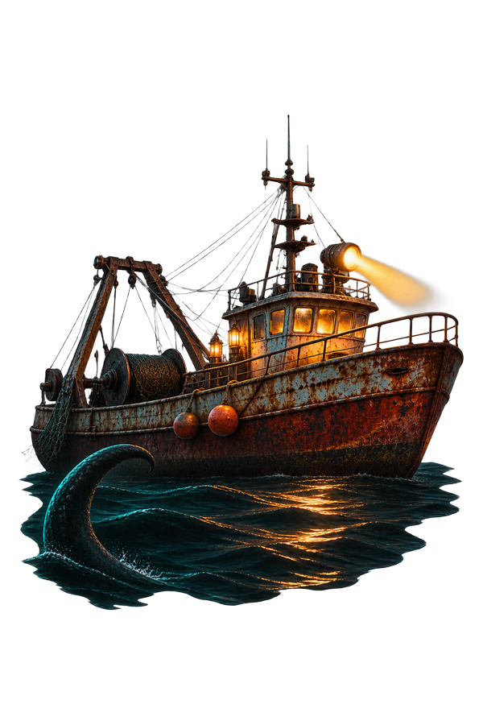

Dreadmoor: un trawler da potenziare in un horror di pesca

· Redazione BENDREX
Dreadmoor è un gioco di pesca horror in prima persona, in accesso anticipato su Steam dal 9 novembre 2026, solo su PC e in single player. Lo sviluppa Dream Dock, lo pubblica Digital Vortex Entertainment.
Che cos'è l'accesso anticipato
Secondo gli sviluppatori, il ciclo di gioco e i sistemi principali sono già implementati; l'accesso anticipato serve a rifinire bilanciamento e dettagli. La permanenza prevista è di 6-12 mesi, con piccoli aggiornamenti di contenuti durante il percorso.
La versione completa dovrebbe aggiungere nuove aree, altre specie di pesci, nuove meccaniche di pesca e altri potenziamenti della barca. Il prezzo attuale è più basso di quello previsto per la 1.0: chi compra ora paga meno, ma compra un gioco in evoluzione.
Il loop: pesca, mercato, barca
Si pesca in acque torbide, si separa il pescato e si controlla la stiva, poi si vende ai mercanti delle Terre Sommerse. Più la preda è pericolosa, più alto è il prezzo. Con i materiali raccolti si creano esche, arpioni, medicine e strumenti di sopravvivenza.
Il peschereccio si potenzia pezzo per pezzo: motore ed elica per velocità e manovrabilità, scafo più resistente, supporto per le taniche di riserva, faro per il buio e postbruciatore per lo scatto. Serve anche a difendersi: gli scontri sono in tempo reale, in mare e sulla terraferma.
Tra una pescata e l'altra si esplorano edifici abbandonati, grotte e relitti, in cerca di rottami e progetti. Il pericolo può arrivare in qualsiasi momento e trasformare una spedizione normale in una lotta per tornare a casa.
Com'è oggi
La versione attuale offre il ciclo completo, una grande regione, una storia originale e una buona varietà di pesci e mutazioni. Finita la storia disponibile, si può continuare a esplorare, pescare, collezionare esemplari rari e potenziare barca ed equipaggiamento.
Su Steam ha «Molto positive» con 616 recensioni: dati Steam al 10 novembre 2026. Lo stato su Steam Deck è «sconosciuto».
Requisiti PC
- Minimi: Windows 10 o superiore, Intel Core i5-8400 o AMD Ryzen 5 2600, 8 GB di RAM, NVIDIA GTX 1060 da 6 GB o AMD RX 580 da 8 GB, DirectX 12, 7 GB di spazio.
- Consigliati: Windows 10 o superiore, Intel Core i5-12400F o AMD Ryzen 5 5600, 16 GB di RAM, NVIDIA RTX 4060 o AMD RX 7600, DirectX 12, 7 GB di spazio.
Il salto tra minimi e consigliati è netto sulla scheda video: una GTX 1060 basta per partire, una RTX 4060 è la richiesta per le impostazioni consigliate.
Prezzo
20,49 €, con lo sconto di lancio del 10% a 18,44 € fino al 23 novembre 2026. Prezzo rilevato il 10 novembre 2026: è indicativo e può cambiare.
Su G2A l'offerta disponibile è un gift Early Access, non una chiave Steam: il codice arriva dal venditore e i tempi dipendono da lui.
Link di affiliazione G2A · per te il prezzo non cambia
A chi piace e a chi no
Piace a chi vuole più gestione di DREDGE e un horror fatto di attese, con la barca da curare e le uscite notturne da pianificare. Piace a chi accetta un gioco in evoluzione e non pretende una campagna rifinita come un titolo finito.
Non è per chi vuole una storia lineare, un horror d'azione o un gioco completo al primo avvio. L'italiano c'è per interfaccia e sottotitoli; l'audio è solo in inglese e russo.
Fonti: pagina Steam di DREADMOOR (descrizione, sezione accesso anticipato, requisiti, prezzo e lingue, letti il 17/11/2026).